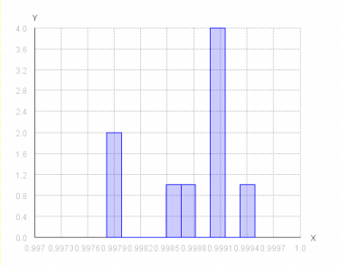
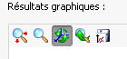

Graphiques
La vue 2D
La vue 2D est un histogramme qui représente la répartition des distances par rapport aux fichiers
Si l'on observe par exemple un baton bien plus à gauche que la majorité des autres fichiers, on peut imaginer qu'il y a une fraude dans les données analysées.

La vue 3D
Cette 2ème vue peut être très utile car elle donne une idée des distances relatives entre chaque points.
Si il y a une fraude, alors on verra les 2 points qui la représente plus proche que la majorité des autres points.

Outils
Les graphiques possèdent des outils pratiques pour faciliter leur exploitation.

On retrouve les fonctions classique, dans l'ordre :
- Centrer les axes
- Zoomer
- Orienter la vue (en 3D seulement)
- Revenir à la position par defaut
- Enregistrer le graphique (au format PNG)